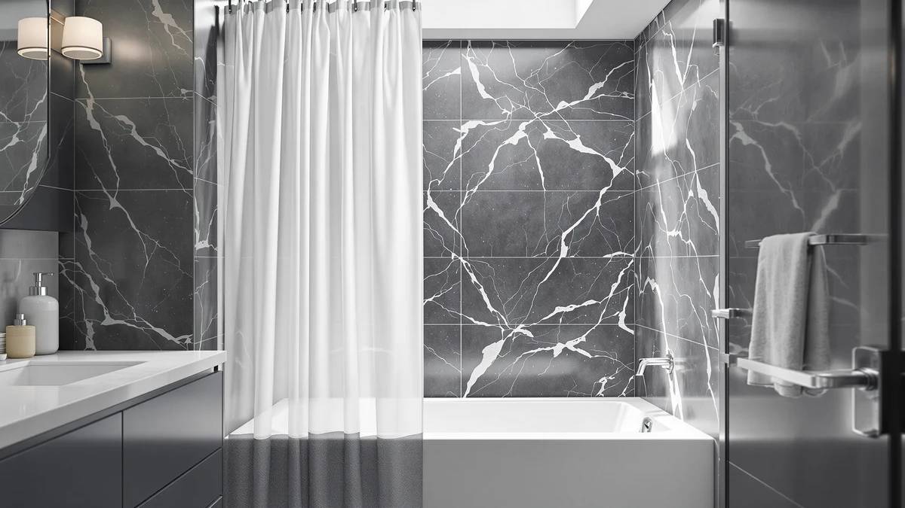

Jolilight Panels Set Review (2026): Worth It?
Prices and picks verified as of November 2026. Independent, reader-supported reviews.


Quick Answer
The Jolilight 2 Panels Set Cream runs 52 by 108 inches per panel, 36 inches longer than a standard 72 inch curtain, so it is built for bathrooms with a shower rod mounted close to a nine-foot ceiling or a stall wide enough to need two panels. At $37.99, it costs more than a typical single curtain, and that extra length will pool on the floor in a standard-height shower. If your bathroom uses a standard 72 inch rod, the BTTN and Dynamene alternatives below are a better fit for less money.
Our pick: Jolilight 2 Panels Set Cream, $37.99 Check Price on Amazon
Bottom line: our top pick is the Jolilight 2 Panels Set Cream Linen Curtains 108 Inches Long at $37.99.
Things to Know Before You Buy
- Each Jolilight panel measures 52 inches wide by 108 inches long, 36 inches longer than the standard 72 inch shower curtain drop, so it only fits bathrooms with a rod mounted close to a nine-foot ceiling.
- The set ships as two panels rather than one curtain, which lets it span a wider stall or a double-entry shower instead of leaving a gap on either side.
- The polyester face is backed with water-resistant PEVA, the same combination used on most shower curtain and liner sets we cover on this site.
- At $37.99, the Jolilight set costs more than the BTTN and Dynamene alternatives below, all priced between $35.99 and $36.99 and cut to a more common 108 by 72 inch size.
- If your bathroom uses a standard 72 inch rod height, the extra-wide and linen alternatives covered later in this review will fit better than the Jolilight set.
This jolilight panels set review looks at whether the Jolilight 2 Panels Set Cream earns a spot on a shower curtain shortlist, since its 52 by 108 inch panels run far taller than the usual 72 inch drop and show up in searches for tall-ceiling and wide-stall showers. At $37.99, the two-panel pack also costs more than most single shower curtains, which raises a fair question about whether the extra height and the second panel are worth paying for. We compared its listed material, size, and price against three more conventional shower curtain alternatives to see which bathrooms it actually suits.
The short version: if your shower rod sits close to a nine-foot ceiling, or your stall is wide enough that one standard panel will not cover it, the Jolilight 2 Panels Set Cream solves a sizing problem that a typical 72 inch curtain cannot. If your bathroom uses a standard-height rod instead, the BTTN and Dynamene alternatives below, cut to a more common 108 by 72 inch spread, are a better fit without the wait for extra fabric to settle. We built this comparison the way we build every shower curtain review on this site, by lining up the manufacturer's specs and the current Amazon price rather than installing the curtain ourselves.
Why You Should Trust Us
Ilane Tall covers bathroom textiles and hardware for Best Shower Curtains, with a focus on how curtain sizing, material, and liners affect fit across different shower shapes. For this jolilight panels set review, she compared the Jolilight 2 Panels Set Cream's listed dimensions, material, and price against the BTTN Boho Scalloped Linen, the Dynamene Extra Wide Waffle, and the second BTTN Linen Textured alternative shoppers commonly cross-shop at a similar price point. We do not run a fake testing lab or claim to have hung every curtain we cover. Our picks come from comparing what is documented on each listing against patterns in verified owner reviews, and we say so plainly whenever the available review data is thin.
Our Research Experience
We did not install the Jolilight 2 Panels Set Cream ourselves. Instead, we researched its listed 52 by 108 inch panel size, its polyester and PEVA construction, and its $37.99 price, then compared those figures against the BTTN Boho Scalloped Linen, the Dynamene Extra Wide Waffle, and the second BTTN Linen Textured option covered below. That approach cannot replicate months of daily use in a specific bathroom, but it does let us line up what this jolilight panel set and its alternatives actually offer on paper rather than repeating marketing copy. For this review, we weighted the unusual 108 inch panel height heavily, since that single measurement determines whether the set fits a given shower at all, and we noted wherever owner feedback pointed to a drawback the spec sheet does not mention.
Overview & Specs

Jolilight 2 Panels Set Cream
What we like
- 52 x 108 inch panels cover a height that a standard 72 inch curtain cannot reach
- Two panels in one pack can span a wider stall or a double-entry shower without buying twice
- Polyester face paired with a PEVA backing resists water without a separate liner
- Cream color pairs with most existing bathroom fixtures and tile tones
Flaws but not dealbreakers
- 108 inch length is excessive for a standard 72 inch rod height and will need to be bunched or hemmed
- Two-panel pack costs more upfront than a single standard-size curtain
- PEVA backing means air drying rather than a hot dryer cycle
| Material | Polyester / PEVA |
| Size | 52"W x 108"L (Pack of 2) |
The Jolilight 2 Panels Set Cream solves a sizing problem most shower curtain roundups do not address. Standard curtains top out around 72 inches, built for a typical floor-to-ceiling shower, but bathrooms with taller stalls, loft conversions, or a rod mounted close to a nine-foot ceiling end up with a curtain that stops well short of the floor. Jolilight cuts each panel to 108 inches and sells them in a pack of two, so the set can cover the extra height on its own or combine both panels across a wider opening instead of leaving a gap on either side.
Because the set ships as two 52 inch panels rather than one wide curtain, it also fits double-entry showers and stalls with a center divider, where a single panel would need to be cut down. The polyester face gives it enough body to hang without clinging, while the PEVA backing handles the water resistance a fabric-only panel would lack. The tradeoff is the price: at $37.99 for two panels, the set costs more than most single 72 inch curtains, and buyers with a standard-height bathroom end up paying for length and a second panel they will not use.
What We Liked
The clearest advantage of the Jolilight 2 Panels Set Cream is the height. Shoppers with a shower rod near a nine-foot ceiling consistently struggle to find a curtain long enough to reach the floor, and at 108 inches per panel, this jolilight panel set is built for exactly that gap instead of requiring a custom hem. The two-panel pack is the other point in its favor: it can span a wider stall or a double-entry shower in one purchase, which a single standard-width curtain cannot do without being cut down and re-hemmed.
What Could Be Better
The same 108 inch length that makes the Jolilight set useful for tall ceilings works against it in a standard bathroom, where a typical 72 inch rod height will leave more than two feet of extra fabric bunching on the floor. The PEVA backing also means the panels should air dry rather than go through a hot dryer cycle, and the price, at $37.99 for two panels, runs higher than most single curtains sized for a standard shower. Shoppers without a tall-ceiling or wide-stall problem to solve are better served by one of the 108 by 72 inch alternatives below.
Who Is It For?
This jolilight panels set fits a specific setup well. If your shower rod sits close to a nine-foot ceiling, or your stall is wide enough that one 52 inch panel leaves a gap, the Jolilight 2 Panels Set Cream is built for that exact problem instead of asking you to hem down a standard curtain or buy two separate ones.
Skip it if your bathroom uses a standard 72 inch rod height. At that height, a 108 inch panel is dramatically oversized, and a more conventional cut like the BTTN or Dynamene options below will hang correctly without bunching. Renters who may move to a bathroom with a standard ceiling should also think twice, since a set built for a nine-foot drop will not transfer well to a typical stall.
Alternatives to Consider
Not every bathroom has a nine-foot ceiling or a double-wide stall, and shoppers who do not need that extra height may prefer a more standard cut at a similar price. Here is how three alternatives sized closer to a conventional 108 by 72 inch spread compare to the Jolilight 2 Panels Set Cream, covering a boho linen look, a waffle weave texture, and a second linen-textured option.

Also Great
BTTN 108x72 Boho Scalloped Linen
The BTTN Boho Scalloped Linen trades the Jolilight set's extra height for a standard 108 by 72 inch cut with a scalloped hem and a linen look, aimed at a boho-style bathroom rather than a tall-ceiling fix. At $36.99, it costs about a dollar less than the Jolilight set, so the decision comes down to which problem your bathroom actually has: height or style.
$36.99
Check Price on Amazon
Best Value
Dynamene Extra Wide Waffle Shower
The Dynamene is not built for extra height. It is cut extra wide instead, with a waffle weave texture that adds visible grooves to the fabric, which makes it a better match than the Jolilight set for a wide standard-height stall rather than a tall one. At $35.99, it is the least expensive of the four options in this comparison.
$35.99
Check Price on Amazon
Best Value
BTTN 108x72 Linen Textured Waterproof
This second BTTN option shares the 108 by 72 inch cut of the Boho Scalloped version but swaps the scalloped hem for a plain textured linen look with a waterproof claim on the listing. At $35.99, it is a straightforward standard-size alternative for shoppers who want a linen texture without the Jolilight set's extra 36 inches of length.
$35.99
Check Price on AmazonWill the Jolilight 2 Panels Set Cream fit a standard 72 inch shower?
Not without bunching.
Why does the Jolilight set come with two panels instead of one curtain?
The two 52 inch panels are meant to span a wider stall or a double-entry shower without leaving a gap on either side, similar to how our extra-wide shower curtain picks handle width.
Frequently Asked Questions
Will the Jolilight 2 Panels Set Cream fit a standard 72 inch shower?
Not without bunching. Each panel measures 108 inches long, 36 inches more than a typical 72 inch drop, so in a standard-height shower the extra fabric will pool on the floor unless you hem it down. The set is built for bathrooms with a rod closer to a nine-foot ceiling, the kind of setup our extra-long shower curtain picks cover.
Why does the Jolilight set come with two panels instead of one curtain?
The two 52 inch panels are meant to span a wider stall or a double-entry shower without leaving a gap on either side, similar to how our extra-wide shower curtain picks handle width. If your shower only needs standard coverage, a single panel from one of the alternatives below will do the job for less.
How does the Jolilight 2 Panels Set Cream compare to the BTTN Boho Scalloped Linen?
The BTTN is cut to a standard 108 by 72 inch spread with a scalloped hem, while the Jolilight set runs 108 inches tall per panel for bathrooms with extra ceiling height. At $36.99 versus $37.99, the price is close enough that the choice comes down to which measurement your bathroom actually needs.
Final Verdict
This jolilight panels set review comes down to one measurement: how tall is your shower rod? If it sits close to a nine-foot ceiling, or your stall is wide enough to need two panels, the Jolilight 2 Panels Set Cream is the most purpose-built option here, and at $37.99 it solves a sizing problem the other three cannot touch. If your bathroom runs a standard 72 inch height, put that budget toward the BTTN Boho Scalloped Linen or the second BTTN Linen Textured option instead, both cut to a conventional 108 by 72 inch spread for $35.99 to $36.99. And if width rather than height is the actual problem, the Dynamene Extra Wide Waffle at $35.99 covers that gap without the extra length you would not use.